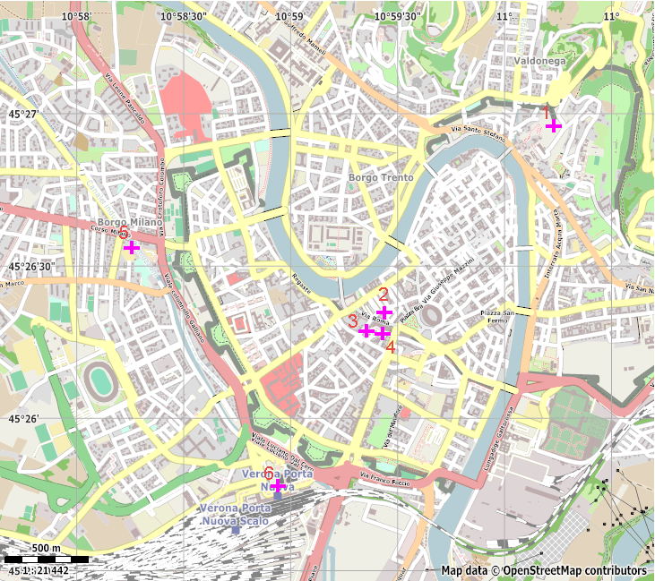
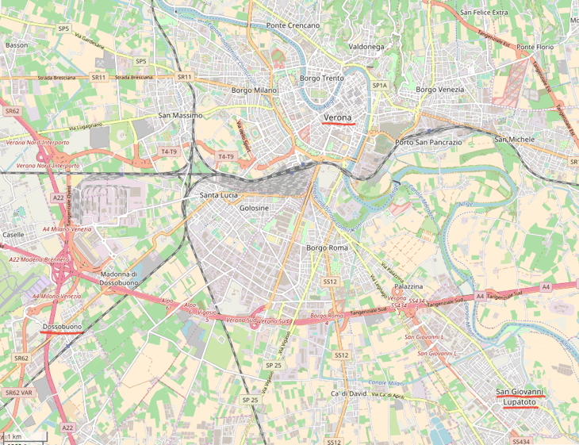

Город Верона – центр одноименной коммуны на севере Италии, в области Венето. Поскольку история города насчитывает более двух тысячелетий, в нем сосредоточено большое количество культурных и исторических объектов, обзор которых далеко увел бы от основной темы, которой посвящен сайт.
Турист, совершающий автономный поход в Альпах, скорее всего, окажется в Вероне проездом на этапе заброски/выброски. Тем не менее, город стоит того, чтобы задержаться в нем хотя бы на один день.
В пригороде Вероны находится международный аэропорт Verona Villafranca, в который из Москвы регулярно летают самолеты авиакомпаний S7 и Air Moldova (с пересадкой в Кишиневе). Из аэропорта до центрального вокзала Вероны регулярно курсирует автобус, стоимость проезда в котором составляет 6.5 евро. Билет может быть приобретен в автобусе у водителя либо кондуктора непосредственно перед посадкой. Билет действует в течение 75 минут после компостирования, в том числе на внутригородских автобусах Вероны.
Билеты на автобусы также можно приобрести в специальных автоматах. При этом следует учитывать, что автоматы не дают сдачу, не возвращают деньги и принимают не все виды банкнот и монет. В худшем случае автомат выдаст вместо билета печатное обязательство, по которому можно получить обратно деньги в одном из офисов компании ATV, обслуживающей городские и пригородные линии Вероны. Один из офисов этой компании находится на центральном вокзале.
Центральный вокзал – Stazione Verona Porta Nuova – находится практически в центре города, к юго-западу от его исторической части (точка 6 на рис. Verona_map). Рядом с вокзалом находится автостанция, от которой отправляются городские и пригородные автобусы. От вокзала идут поезда в направлении Милана, Венеции и Болоньи. Основной же интерес для туристов представляют поезда северного направления, на которых можно добраться до гор Южного Тироля. Поезда, следующие до пограничного с Австрией пункта Brennero (нем. Brenner), отправляются каждые 2-3 часа. Подробную информацию, которая поможет сориентироваться на вокзале туристам, оказавшимся там впервые, можно найти на сайте http://www.chipolletto.com/transport/po-strane/vokzal-stazione-verona-porta-nuova.htm.
В Вероне туристы могут приобрести необходимые в походе товары, провоз которых через границу невозможен: продукты, содержащие в себе белки животного происхождения (запрещены к ввозу в ЕС, особенности подготовки раскладки для альпийского похода см. в разделе "провиант") и газовые баллоны (запрещены для перевозки в самолете в составе багажа либо ручной клади, см. в разделе "газ").
Продукты можно купить в магазинах сетей Lidl (Via Alessandro Manzoni, 11, 37138 Verona VR), Pam (Via dei Mutilati, 3, 37122 Verona VR) и Spar (Via Daniele Manin, 7, 37122 Verona VR), расположенных неподалеку (в радиусе 2-х км) от вокзала (точки 5,4,3 на рис. Verona_map). За газовыми баллонами придется ехать в магазины сети Decathlon в пригородные поселки Dossobuono (Via Borgo Bello, 37062 Dossobuono di Villafranca VR) и San giovanni Lupatoto (Via Monte Cristallo, 37057 San Giovanni Lupatoto VR), до которых можно добраться на автобусах, отправляющихся от вокзала (см. рис. communa_map). При планировании заброски следует учитывать, что автобусы ходят достаточно редко.
Прекрасным вариантом проживания для туристов, решивших провести несколько дней в Вероне, является кемпинг "Camping Castel San Pietro" (адрес Via Castel San Pietro, 2, 37129 Verona VR, точка 1 на рис. Verona_map), расположенного на северо-западной окраине исторической части Вероны на склоне холма на территории старой крепости. Кемпинг привлекателен, прежде всего, своим расположением: места под палатки расположены внутри крепостных стен. В кемпинге есть душ, общая комната с библиотекой и настольными играми, и открытая кухня с газовой плитой и посудой, за использование которых не взимается дополнительная плата. Стоимость одного дня пребывания в кемпинге составляет 14.5 евро, при условии, что туристы арендуют место под 4-х местную палатку. Для бронирования следует использовать форму на сайте, бронирование через сервисы типа booking.com невозможно.
В кемпинге есть небольшой магазин, но цены в нём довольно высокие. Оптимальным решением станет покупка продуктов в крупных продуктовых магазинах.
Да, это своего рода реклама, но исключительно на добровольной и безвозмездной основе.
Зачем? К черту традиционный сувенирный хлам типа магнитиков, отправьте своим друзьям и родственникам открытки (которые можно купить, например, в приютах на маршруте). Обращаться на почту для этого не обязательно: марку можно приобрести в киосках "Табакерия" (для отправки в Россию нужна марка номиналом 1 евро, по состоянию на 2017 год). Открытку нужно опустить в почтовый ящик в отделение для общей (важно!), а не локальной почты. Подписывать открытку нужно следующим образом. Адрес начинается с указания страны назначения на английском языке: Russia. Далее следует адрес по-русски и индекс.
В почтовое отделение стоит обращаться только в том случае, если вас гложет червь сомнений в чем-либо касающемся отправки открытки, либо вы хотите приобрести коллекционную марку ('филатэлиа'). Районные отделения почты работают по специфическим графикам, которые будут вряд ли удобны для туристов. Дольше всего работает центральное отделение, расположенное по адресу Via Carlo Cattaneo, 23, 37121 Verona VR (точка 2 на рис. Verona_map). Обращаясь на почту, стоит быть готовым к тому, что далеко не все ее работники знают английский язык.

Рис. Verona_map. Карта центральной части Вероны. Цифрами обозначены: (1) Camping Castel San Pietro, (2) Центральное отделение почты, (3) Spar, (4) Pam, (5) Lidl, (6) Центральный вокзал.

Рис. communa_map. Карта коммуны Верона.